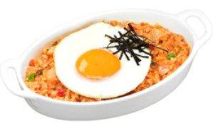
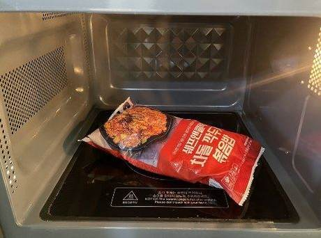
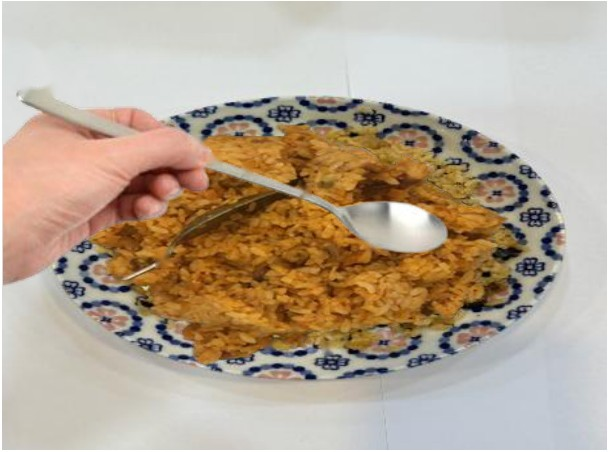
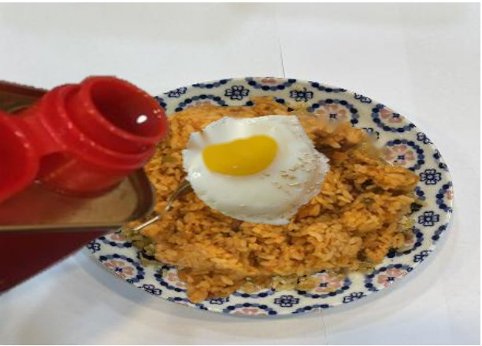
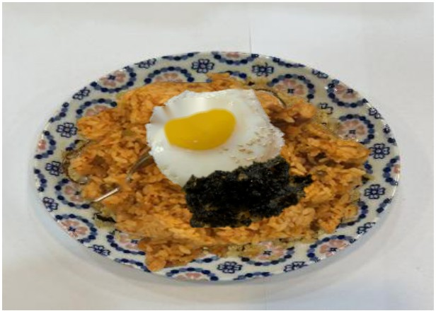

<!DOCTYPE html>
<html lang="ko">
<head>
<script>(function(){try{if(localStorage.getItem("beoltoon_auth")!=="ok"){location.replace("login.html");}}catch(e){location.replace("login.html");}})();</script>
<meta charset="UTF-8" />
<meta name="viewport" content="width=device-width, initial-scale=1.0" />
<title>아삭 김치볶음밥 - 조리매뉴얼</title>
<link rel="stylesheet" href="style.css" />
</head>
<body>

<div class="header">
  <a href="food.html">&larr; 목록으로</a>
</div>

<div class="container">

  

  <div class="info-box">
    <table class="info-table">
      <tr><th>메뉴명</th><td>아삭 김치볶음밥</td></tr>
      <tr><th>판매가격</th><td>7,500원</td></tr>
      <tr><th>원재료</th><td>김치볶음밥, 계란프라이, 김가루, 참기름, 깨</td></tr>
      <tr><th>사용 부자재</th><td>덮밥접시</td></tr>
      <tr><th>메뉴특징</th><td>김치볶음밥에 계란프라이와 김가루를 뿌린 정통 볶음밥</td></tr>
    </table>
  </div>

  <div class="steps-title">조리방법</div>

  <div class="step-card">
    
    <div class="step-text">
      <span class="step-number">1</span><br>
      냉동 김치 볶음밥 가장자리를 약간만 뜯어 전자레인지에 넣고<br>4분 30초간 해동한다.
    </div>
  </div>

  <div class="step-card">
    
    <div class="step-text">
      <span class="step-number">2</span><br>
      계란프라이팬에 기름을 약간 두른 후, 계란 1개를 깨서 반숙 프라이를 구워 준비한다.<br>(인덕션 세기 3~4)
    </div>
  </div>

  <div class="step-card">
    
    <div class="step-text">
      <span class="step-number">3</span><br>
      접시에 해동한 볶음밥을 담은 후 숟가락으로 밥을 펼쳐준다.
    </div>
  </div>

  <div class="step-card">
    
    <div class="step-text">
      <span class="step-number">4</span><br>
      볶음밥 위에 계란프라이를 올린 후 참기름 5g 크게 한바퀴 둘러준다.
    </div>
  </div>

  <div class="step-card">
    
    <div class="step-text">
      <span class="step-number">5</span><br>
      김가루 1g을 올린 후 깨를 뿌려 완성한다.
    </div>
  </div>

  <div class="step-card">
    
    <div class="step-text">
      <span class="step-number">6</span><br>
      우동국물, 단무지와 함께 제공한다.<br>(숟가락, 젓가락, 냅킨 제공)
    </div>
  </div>

  <div class="info-box">
    <p style="font-size:13px; color:#c0392b; margin:0; line-height:1.6;">냉동고에서 볶음밥 꺼냈을 때 뭉쳐있는 부분은 풀어준다.<br>    (뭉친 상태로 렌지에 돌릴 경우, 뭉친 부분은 해동이 잘 안되어 밥알이 젖어 있음)<br><br>냉동 볶음밥이 시간이 지나면 퍽퍽해지기 때문에 반숙 계란프라이를 비벼서 촉촉하게 먹는 것이 포인트<br><br>고객이 완숙 요청하면 변경해서 제공한다.<br>※ 우동국물 제조<br>우동원액 1펌프(10g)+<br>뜨거운물 150g+우동건더기 2g</p>
  </div>

  <div class="footer-note">
    본 저작물을 무단으로 사용하는 것은 저작권자의 권리 침해의 불법 행위로 법적 분쟁을 야기할 수 있습니다.<br>COPYRIGHT ⓒ ISENS F&B INC. ALL RIGHTS RESERVED
  </div>

</div>

  <script src="videos.js"></script>
</body>
</html>